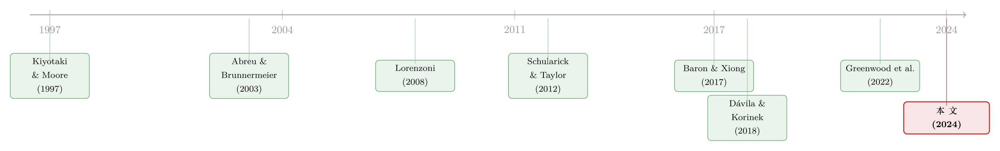

音乐停了，谁还在跳舞？——一个关于「延迟的危机」的理性预期模型
本文读的是 Liu, Wang & Yang (2024, Journal of Financial Economics)：他们用一个理性预期模型回答了一个看似简单、却长期没有好答案的问题——既然所有人都知道信贷繁荣终将破灭，为什么繁荣还能持续那么久、破灭又来得那么猛、复苏还那么慢？答案藏在一个「抢椅子游戏」里：每家银行都想在崩盘前最后一刻退场，但因为谁也不知道自己排在退场队伍的第几位，理性的选择反而是「多等一会儿」。无数个「多等一会儿」叠加起来，就把危机推迟到了一个社会次优的时点，于是被音乐绊住的人更多，火线抛售更惨，复苏也更慢。
1 引言：一句话，和一个赖着不肯散场的舞会
先讲一个被无数次引用、却很少被认真「定价」的故事。
2007 年，花旗集团的董事长兼 CEO 查尔斯·普林斯（Charles Prince）对《金融时报》说了一句后来载入金融史的话：
「当音乐停下来的时候，从流动性的角度看，事情会变得很复杂。但只要音乐还在响，你就得站起来跳舞。我们还在跳。」
几个月后，音乐真的停了。次贷市场——这场危机的导火索之一——在 2000 到 2006 年间，从 1000 亿美元一路狂飙到 6000 亿美元，又在 2007–2009 年间骤然坍缩到不足 200 亿美元。普林斯的花旗，连同一大批「还在跳舞」的金融机构，被死死绊在了舞池中央。
事后看，普林斯的话常被当作贪婪与短视的注脚。但 Liu, Wang & Yang 这篇论文想说的恰恰相反：普林斯也许并不蠢。在一个所有人都知道「舞会终将散场」、却没人知道「音乐究竟哪一秒停」的世界里，继续跳舞，可能正是一个理性人的最优选择。
这就引出了金融危机文献里两个一直没被理论很好回答的问题：
- 既然人人都预见到前方有巨大的、不可避免的风险，为什么一开始还要借这么多债（信贷）？
- 如果一轮信贷繁荣是低效的（inefficient），它为什么往往要持续很久才破灭？
这两个问题之所以棘手，是因为它们直接挑战了「理性」。一个朴素的直觉是：如果大家都知道这是泡沫，理性人就该早早离场，泡沫根本撑不起来。可现实里，繁荣偏偏一拖再拖。要么我们承认人是非理性的，要么——我们得找到一个机制，让「理性」本身生产出「拖延」。
这篇论文选的是后一条路。
2 核心张力：把繁荣的破灭，写成一场「抢椅子游戏」
论文的整个故事，可以浓缩成一句话：信贷扩张与金融危机，演化得像一场抢椅子游戏（musical chairs）。
在这个游戏里，每个玩家都有动机在崩盘前的「最后一刻」退场——既不能太早（太早走，就白白丢掉了繁荣期更高的收益），也不能太晚（太晚走，就被崩盘抓住、血本无归）。所有人都心知肚明：到最后，总有一部分玩家会被音乐绊住。可问题在于，没有人知道自己究竟排在第几位。
于是，一个自然的问题是：这种「想卡在最后一刻退场」的个体理性，会汇聚成什么样的集体结果？
论文的回答是：它会汇聚成一个过度延迟（over-delay）的危机。每家银行单独看都做出了对自己最优的等待决策，但因为它们没有把「自己晚走一步会压低别人贱卖价格」这件事算进自己的账本，整个系统的危机就被推迟到了一个比社会最优更晚的时点。危机来得越晚，崩盘那一刻还困在投机部门里的银行就越多，火线抛售的价格就越低，被拖垮的银行就越多——financial crisis 更严重，aftermath 的经济复苏更慢。
这里的关键词是「时机的外部性」（the timing dimension of externality）。以往关于「货币外部性（pecuniary externality）」的文献，盯的是借款人借多少（杠杆水平，intensive margin）；而这篇论文盯的是贷款人什么时候撤（退出时机，extensive margin）。同样是火线抛售，前者改变的是「每个借款人被贱卖的资产量」，后者改变的是「有多少借款人同时被卷进贱卖」。这是一个全新的角度。
接着，让我们把这个抽象的故事，落到一个可以求解的模型里。
3 模型设定：两类生意、一个看不见的冲击、和排队的消息
模型经济里有一个连续统（unit mass）的银行，它们可以在两类生意里经营：
- 投机业务（speculative business）：对应 Minsky 笔下的「投机性投资」——次贷、CDS 交易、各种影子银行活动。收益高（现金流为 \(c_H\)），但天生脆弱，会崩盘。
- 传统业务（traditional business）：普通的商业贷款。收益低（现金流为 \(c_L\)），但稳。
时间从 \(t=0\) 连续开始，无风险净利率为 \(r\)。一开始，所有银行都在投机部门里。一家银行在投机部门的瞬时收益，取决于两件事：经济基本面（fundamentals） \(\theta(t)\)，以及还留在该部门里的银行测度 \(\omega(t)\)。具体地：
$$ c(t)=\begin{cases} c_H & \text{if } \theta(t)+\beta\cdot\omega(t)\ge \alpha \quad (\text{no crisis})\\[4pt] 0 & \text{otherwise} \end{cases} $$
这里 \(c_H>r\)，\(\beta>0\) 衡量部门内企业之间的（生产）互补性，\(\alpha>\beta\) 是常数。这个 \(\theta(t)+\beta\cdot\omega(t)\ge\alpha\) 就是「无危机条件」（no-crisis condition）：只要基本面 \(\theta(t)\) 还够好，或者留在投机部门里的银行 \(\omega(t)\) 还够多，部门就不崩。
请注意这个设定的精妙之处：危机既不是纯基本面的，也不是纯协调失败的，而是两者的叠加。一个坏的基本面冲击触发了危机的可能，但真正决定崩与不崩的，是「还有多少人陪你一起留在场上」——这正是协调（coordination）问题的来源。
基本面与信息。 \(\theta(t)\) 服从一个外生过程：起初足够高，没有危机；但在 \(t=t_0>0\) 时，一个负向冲击袭来，此后 \(\theta(t)\) 持续下滑（\(\theta'(t)<0\)）。为了得到闭式解，论文用线性设定：
$$ \theta(t;t_0)=\begin{cases} \alpha & \text{for } t\le t_0\\[4pt] \alpha-\kappa\,(t-t_0) & \text{for } t> t_0 \end{cases} $$
其中 \(\kappa>0\) 是基本面恶化的速度。真正的关键一步在于：冲击的到达时间 \(t_0\) 是不可观测的（这正是 Abreu and Brunnermeier 2002, 2003 的核心摩擦）。\(t_0\) 本身服从一个指数分布。冲击发生后，关于「部门已被冲击」这个事件的消息，在 \([t_0,\,t_0+\eta]\) 这段区间内、按均匀分布顺次（sequentially）传到各家银行手里。
这就是「异步知觉」（asynchronous awareness） 的全部含义：每家银行都会在某个时刻「醒来」，意识到坏消息已经来了，但因为 \(t_0\) 是随机的，它不知道自己在这条消息队列里排第几——不知道在它之前已经有多少同行醒了、又有多少还蒙在鼓里。
这一点是整篇论文的「阿基米德支点」。如果 \(t_0\) 可观测、或者大家同时知觉，那么所有银行会同步行动，协调问题瞬间瓦解。正是「不知道自己排第几」这个信息摩擦，才让每家银行陷入了那个抢椅子的两难。
4 模型推导：从清算价值到「最优等待时长」
接着是退出的后果。一家银行若决定退出（不再续贷），它对应的企业就得清算资产（共一单位）来偿还贷款本金。这里出现了全文最重要的一道分岔：
$$ L=\begin{cases} 1 & \text{if no crisis}\\[4pt] \ell=g(\omega_C) & \text{if crisis} \end{cases} $$
在危机来临之前退出的银行（survival banks），资产可以「有序地」按价格 1 卖给相关部门的投资者，拿回全部本金 1。一旦危机降临，还留在场上的银行就被「抓住」了（failed banks），只能以火线抛售价 \(\ell=g(\omega_C)\) 出清。这里 \(g(\cdot)\) 是向下倾斜的火线抛售价格函数（\(g'\le 0\)），\(\omega_C\) 是危机时刻被卷入贱卖的企业总测度——这是一个内生变量。论文同样用线性设定：当 \(\omega>\omega_0\) 时 \(g(\omega)=1-\gamma\cdot(\omega-\omega_0)\)，\(\gamma>0\) 是贱卖价格对「被卷入数量」的敏感度。
这个 \(\omega_C\) 是整个外部性的核心载体：被抓住的银行越多，贱卖价格越低，每个被抓住的银行能拿回的钱就越少。
退出拿到清算价值后，无论 survival 还是 failed，都可以把钱投进传统部门一个固定规模的项目（成本为 1，永续现金流 \(c_L\)，现值 \(c_L/r>1\)）。survival bank 手握 1，付得起；failed bank 只有 \(L<1\)，必须再融资，成功概率为 \(p(L)\in[0,1)\) 且 \(p'(\cdot)>0\)（论文取 \(p(L)=L\)）。于是，一家银行带着清算价值 \(L\) 去再投资的期望现值是：
这道方程把「时机」与「福利」死死焊在了一起：晚退出 → 更可能被抓住 → \(L\) 从 1 掉到 \(\ell\) → 不仅 \(a_1\) 直接缩水，连 \(a_3\) 的再投资概率也跟着塌——失败的银行更难翻身，复苏因此更慢。「慢复苏」不是外生假设，而是从火线抛售价格内生长出来的。
均衡：一个「等待时长」就刻画了一切。 论文找的是对称均衡——每家银行在「醒来」（收到坏消息）之后，都等待同一个时间间隔 \(\tau\) 再退出。记危机到达时间为 \(t_0+\zeta\)。等待策略 \(\tau\) 决定了危机时点 \(\zeta\)，进而决定了贱卖价 \(\ell\)。整个复杂的博弈，最后被压缩成一个标量 \(\tau\) 的选择。
然后，论文比较了两个均衡：
-
社会计划者的二阶最优（second-best constrained equilibrium）：计划者同样观测不到冲击时间 \(t_0\)，但可以「协调」所有银行选同一个等待时长。它面对的权衡（tradeoff）是——延长等待，所有银行能在投机部门多享受一段高收益 \(c_H\)；但等得越久，危机来时基本面 \(\theta\) 恶化得越深，被抓住的银行越多，每个被抓住的银行的贱卖价越低。在这个权衡下，存在唯一的最优延迟。
-
分散化竞争均衡（decentralized competitive equilibrium）：单个银行面对相似的权衡，但它把贱卖价 \(\ell\)（贷款回收价值）当作给定的外生变量。它不会意识到「自己晚走一步，会让 \(\omega_C\) 变大、把 \(\ell\) 压低」。
于是反转出现了：正因为单个银行不内部化自己的时机选择对火线抛售价的影响，它在退出时等得太久了（over-waiting）。论文证明：分散化均衡下，个体银行的退出时点系统性地晚于二阶最优。这就是「过度延迟」的精确含义——不是有人犯傻，而是每个理性人都只算自己那本账，加总起来就偏了。
5 从微观博弈到宏观周期：booms, slowdowns, crashes, recoveries
如果故事到这里就结束，它还只是一个关于「退出时机」的精巧博弈。但论文走得更远——这也是它在方法论上「第一个把 Abreu–Brunnermeier 式的微观摩擦嵌进标准宏观模型」的雄心所在。
首先，它把模型补全成一个有进有出（entry and exit）的完整周期：银行从传统部门出发，在正向冲击后进入投机部门，再在基本面恶化后退出、重回传统部门。同样地，进入和退出的时机都由异步知觉决定，二阶最优与分散化均衡也都各有唯一解，结论照旧——分散化均衡里，银行在投机部门里待得太久了。
接着，论文把它扩展进一个标准的宏观增长框架，显式地刻画资本积累与消费决策。于是一组很有画面感的宏观动态浮现出来：
- 当投机部门基本面开始悄悄恶化时，信贷繁荣仍在继续，但总量增长开始放缓（slowdown）；
- 当足够多的银行抽身离场后，投机部门开始收缩，增长进一步放缓；
- 而一旦收缩启动，它就以不断加速的方式坍塌——经济在「长期缓慢恶化的基本面」之后，以一个加速度冲向危机（crash）。
这恰好对应了一个被反复观察到的现象：次贷违约其实从 2007 年第一季度就开始上升（标普/凯斯-席勒房价指数录得 1991 年以来首次同比下跌），但full-bloom 的危机直到 2008 年下半年才真正爆发。慢慢地恶化，然后突然地崩塌——这正是「异步知觉」作为一种宏观冲击传导与放大机制的力量。
最后，论文分析了两类能纠正这一低效的政策：一是信贷政策（提高失败银行的再融资成本），二是税收政策（对失败银行征收资本税）。两者直觉相通——都是给「被抓住」这件事加一道惩罚，从而让个体银行有动机缩短在投机部门的逗留、主动降低自己被危机抓住的概率。论文证明：存在唯一的利率（信贷政策）和唯一的税率（税收政策），能够刚好实现二阶最优。
（关于「危机面前政策该不该出手、又该怎么出手」，这条线上还有一篇很值得对读的文章，参见《泡沫破灭之前，央行该不该出手？——把「情绪」写进金融危机的最优政策》。两者的对照很有意思：那篇把驱动危机的源头放在「情绪」上，而这篇把它放在「理性的时机博弈」上。）
6 文献脉络：从「为什么泡沫能持续」到「为什么低效的繁荣能持续」
把这篇论文放进它所在的研究脉络里，它的坐标就清晰了。
最早，是行为派的洞见。Minsky（1977, 1986）和 Kindleberger（1978）很早就指出，信贷繁荣本身会孕育衰退与危机——这是一个深刻但「不那么理性」的直觉。
接着，理性预期模型分两支接力。一支是 Bernanke and Gertler（1989）与 Kiyotaki and Moore（1997）开创的金融摩擦理论，强调外生基本面冲击如何被放大与传导；另一支则强调危机可以是自我实现的（self-fulfilling），即便没有基本面冲击（如 Cass and Shell, 1983；Cooper and John, 1988）。这篇论文巧妙地站在两支中间：危机由坏的基本面冲击触发，却被协调问题放大——而且，它放大的维度是「时机」，这是过去文献没有刻画过的。

然后，是最直接的方法论源头：Abreu and Brunnermeier（2002, 2003）。他们在一个禀赋经济里证明，异步知觉不仅会导致对冲击的异步反应，还会导致反应的延迟——这解释了「为什么泡沫（繁荣）能持续」。这篇论文站在他们肩上，把同一套时机博弈搬进了一个有生产、有一般均衡、讲福利的经济，从而把命题升级为：为什么一个「低效的」繁荣能持续——而且这种延迟还是一种社会次优的「过度延迟」。
与此同时，它也接上了关于「货币外部性导致过度金融脆弱」的庞大文献（Shleifer and Vishny, 1992；Lorenzoni, 2008；Dávila and Korinek, 2018）。它的贡献是把外部性从「借多少」的强度边际，挪到了「何时撤」的广度边际，并解析地分解了这个时机外部性中方向不同的几股力量。
最后，在实证上，Schularick and Taylor（2012）、Baron and Xiong（2017）、Greenwood et al.（2022）等积累了大量证据：信贷繁荣预示金融危机，繁荣的幅度能预测危机的严重程度与衰退的长度。这篇论文，正是为这一系列「经验规律」提供了一个统一的理性预期解释。
7 评论与延伸（Q&A + 研究方向）
(a) 几个可能的疑问
Q：这跟普通的「协调博弈/银行挤兑」模型到底有什么不一样？
关键差别在「时机」。经典的协调博弈（如银行挤兑）问的是「跑还是不跑」这个离散选择，且常常有多重均衡。这篇论文里，异步知觉的引入让模型有了唯一均衡，而博弈的对象不是「跑不跑」，而是「什么时候跑」——一个连续的时机决策。被放大的不是「要不要崩」，而是「崩得多晚、因而多惨」。
Q：既然有「自我实现」的味道，为什么是唯一均衡，而不是多重均衡？
因为异步知觉打破了「共同知识」。在标准协调博弈里，大家同时行动、信念可以自我实现地跳到任意一个均衡；而这里每家银行只知道自己「醒来」的时刻、不知道排第几，这种私人信息的逐层错位，像全局博弈（global games）一样把均衡「钉」成了唯一一个。危机由基本面触发、由协调放大，但结果是确定的。
Q：「过度延迟」的方向凭什么是确定的？会不会个体反而退得太早？
论文的证明给出了明确方向：个体退得太晚。直觉是，单个银行把贱卖价 \(\ell\) 当外生给定，因此看不到「自己多留一刻 → \(\omega_C\) 变大 → 贱卖价被压低 → 伤害所有被抓住的同行」这条链。它只享受多留一刻的私人收益 \(c_H\)，却把成本甩给了别人。这是一个标准的负外部性，方向上必然是过度逗留。不过论文也诚实地指出，这个时机外部性内部其实有方向不同的几股力量，他们的贡献之一就是把它解析地分解、并刻画每股力量的符号与大小。
Q：模型说「慢复苏」，这个「慢」是从哪里冒出来的？
从再投资方程 \(\Pi(L)=L+(c_L/r-1)\,p(L)\) 里。被抓住的银行清算价值 \(L\) 掉到火线抛售价 \(\ell<1\)，于是再融资成功概率 \(p(L)=L\) 也跟着下降——更多失败银行无法重启传统部门的项目。危机时被抓住的银行越多（\(\omega_C\) 越大），\(\ell\) 越低，能成功转场的银行越少，总产出的恢复就越慢。「慢复苏」是火线抛售价格内生塌陷的直接后果，不是额外假设。
Q：两类政策（信贷 vs 税收）既然都能实现二阶最优，有区别吗？
在这个模型里两者直觉相通、都能精确实现二阶最优，区别更多在实现细节与现实可操作性：信贷政策通过抬高失败银行的再融资成本起作用，税收政策通过对失败银行征资本税起作用，本质都是给「被抓住」加一道惩罚，从而把个体的私人最优时机往前拽、对齐社会最优。哪一个更可行，要看现实中监管者能更精准地观测和干预哪一个边际。
Q：这套机制只能讲次贷吗，还是更普适？
作者明确说，异步知觉在很多重要场景里都存在——泡沫、货币攻击、银行挤兑。所以这个把微观时机博弈嵌进宏观增长的框架，提供的是研究这一大类事件宏观影响的「第一步」。它的野心不在于解释某一次危机，而在于给「协调 + 时机 + 一般均衡」提供一个可处理（tractable）、可扩展的统一容器。
(b) 几个可能的研究问题与提案
1. 把「时机外部性」搬到公司债的展期决策上。 【经济故事】这篇论文讲的是银行「何时撤出投机部门」，但同样的逻辑天然适用于公司债持有人「何时拒绝展期（rollover）」。当一家发行人基本面恶化时，每个债权人都想赶在违约潮前撤，但谁也不知道自己排第几，于是集体性地拖延、最终把一波本可有序的去杠杆，挤成了一场踩踏式的火线抛售。【可行性】中。理论端是这篇论文的直接变体；实证端需要债券层面的持有人结构与展期/赎回时点数据（如 TRACE 加机构持仓），识别难点在于把「时机外部性」从纯基本面冲击中剥离出来。
2. 外资持有人是否加剧了「时机的非同步」？ 【经济故事】如果一国信用市场里同时有本地与外资持有人，两类投资者「醒来」的时点（信息到达速度）系统性不同，异步知觉的分布就被外资比例拉宽了——这可能让退出潮更分散、危机更被推迟，也可能因为外资更快撤离而让崩塌更陡。【可行性】中。可用跨国公司债持仓数据，以外资持有份额作为「知觉异步程度」的代理，看其与危机时点、贱卖深度的关系。识别上需要处理外资份额的内生性（可考虑指数纳入等外生变动）。
3. 度量「过度延迟」：能不能把繁荣「该结束却没结束」的那段时间估出来？ 【经济故事】模型给出了二阶最优与分散化均衡退出时点之差。如果能在数据里找到一个「计划者基准」（比如基本面恶化的起点）与实际信贷见顶时点之差，就能把「过度延迟」变成一个可度量、可跨国比较的量，并检验它是否预测危机严重程度。【可行性】中偏低。难在构造可信的「最优时点」基准，容易陷入事后诸葛亮的循环论证；需要非常小心的事前（ex ante）信息集设定。
4. 火线抛售的「广度边际」 vs 「强度边际」，哪个对复苏更致命？ 【经济故事】这篇论文的卖点是把外部性从「每个借款人贱卖多少」（强度）挪到「多少借款人被卷入贱卖」（广度）。一个自然的实证问题是：在真实危机里，复苏的快慢更多由广度（多少机构同时倒）还是强度（每家倒得多惨）决定？【可行性】高。危机事件研究里，被卷入机构数量与单家损失规模都相对可测，可在跨危机样本里横向比较二者对后续产出恢复速度的解释力。
8 我的判断
先说贡献。这篇论文最漂亮的地方，是用一个唯一均衡的理性模型，同时回答了「为什么借这么多、为什么拖这么久、为什么崩这么猛、为什么复苏这么慢」这一连串环环相扣的问题，而且把答案统一在「时机」这一个维度上。它没有诉诸非理性，也没有诉诸多重均衡的「运气」，而是把抢椅子的两难写成了一个干净的等待时长选择。把 Abreu–Brunnermeier 的微观摩擦第一次嵌进带资本积累与风险厌恶的宏观模型、还能保持可解，这是实打实的方法论推进。「时机外部性」对「水平外部性」的概念区分，以及对这股外部性的解析分解，也确实是新东西。
再说担忧。第一，这是一篇纯理论论文，所有「与现实吻合」的论述（次贷的数字、2008 年的时点）都是叙事性校准，而非结构估计或检验——模型有没有定量解释力，仍是悬而未决的。第二，唯一均衡的代价是对信息结构（指数分布的 \(t_0\)、均匀分布的知觉、线性的 \(\theta\)、\(g\)、\(p\)）下了相当强的设定，这些线性假设是为了闭式解，但「过度延迟」的方向与量级对它们有多敏感，文中给的稳健性讨论有限。第三，模型里银行是同质的、对称策略的，而现实中危机的核心往往是异质性——谁先跑、谁被困，恰恰取决于资产负债表的差异（关于异质性对稳定性的微妙作用，可参见《异质性，反而是金融体系的「稳定器」？》）。
后续我最想看到的，是有人把这套「时机外部性」拿去做结构估计：在公司债或银行间市场里，用真实的持有人结构和退出时点，把「分散化均衡比社会最优晚退了多久」估成一个数字，再看它能不能预测危机的严重程度。如果能，这篇论文就从一个漂亮的理论，变成一把能用的尺子。
参考文献
- Abreu, D., Brunnermeier, M. K. (2002). Synchronization risk and delayed arbitrage. Journal of Financial Economics 66, 341–360.
- Abreu, D., Brunnermeier, M. K. (2003). Bubbles and crashes. Econometrica 71, 173–204.
- Baron, M., Xiong, W. (2017). Credit expansion and neglected crash risk. Quarterly Journal of Economics 132, 713–764.
- Bernanke, B. S., Gertler, M. (1989). Agency costs, net worth, and business fluctuations. American Economic Review 79, 14–31.
- Dávila, E., Korinek, A. (2018). Pecuniary externalities in economies with financial frictions. Review of Economic Studies 85, 352–395.
- Greenwood, R., Hanson, S. G., Shleifer, A., Sørensen, J. A. (2022). Predictable financial crises. Journal of Finance 77, 863–921.
- Kiyotaki, N., Moore, J. (1997). Credit cycles. Journal of Political Economy 105, 211–248.
- Liu, X., Wang, P., Yang, Z. (2024). Delayed crises and slow recoveries. Journal of Financial Economics 152, 103757.
- Lorenzoni, G. (2008). Inefficient credit booms. Review of Economic Studies 75, 809–833.
- Minsky, H. P. (1977). The financial instability hypothesis: an interpretation of Keynes and an alternative to "standard" theory. Challenge 20, 20–27.
- Schularick, M., Taylor, A. M. (2012). Credit booms gone bust: monetary policy, leverage cycles, and financial crises, 1870–2008. American Economic Review 102, 1029–1061.
- Shleifer, A., Vishny, R. W. (1992). Liquidation values and debt capacity: a market equilibrium approach. Journal of Finance 47, 1343–1366.